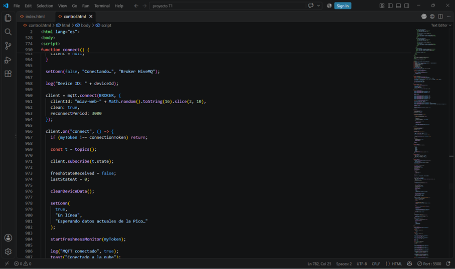
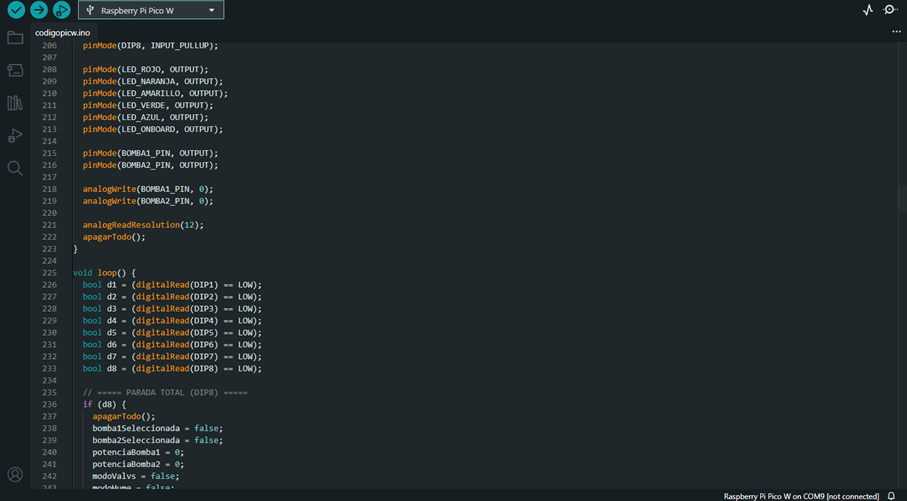
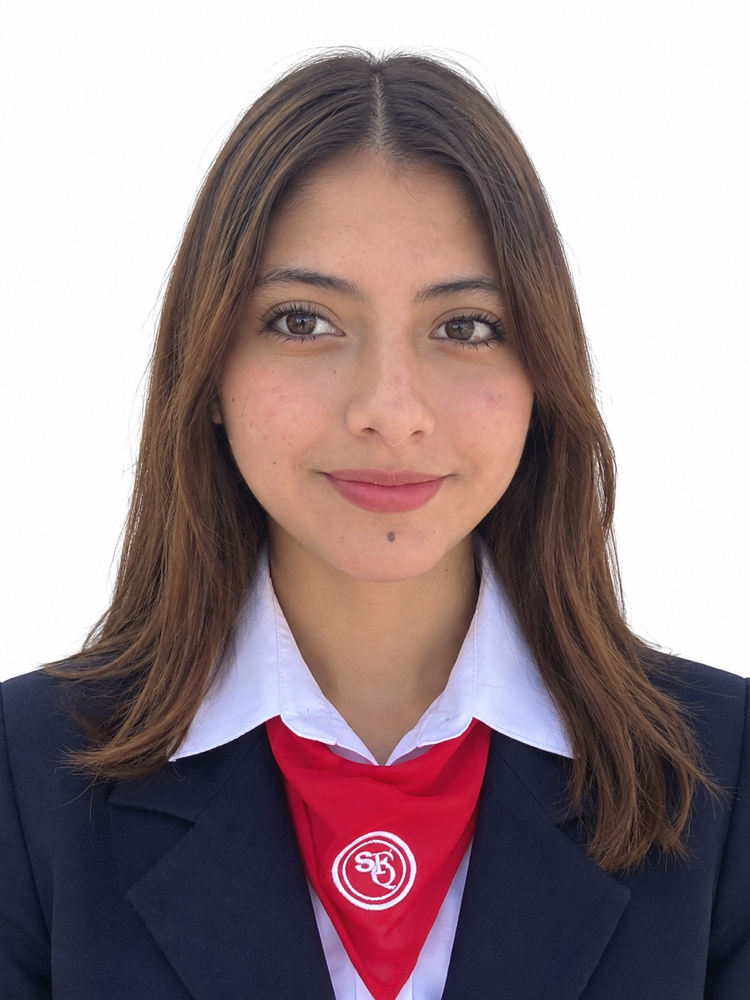

01
Raspberry Pi Pico W
Es el núcleo del sistema. Coordina sensores, lógica de funcionamiento, modos de control y accionamiento de las bombas.
Un sistema experimental para dos plantas que combina sensores, programación y control para responder al estado de la humedad del suelo y explorar una forma más consciente de gestionar el riego.
MIAV nace como un prototipo intermodular que explora cómo sensores, programación y automatización pueden trabajar juntos para que el riego responda a las condiciones observadas en las plantas.
El nombre resume su lógica: Medir el estado de las plantas, Interpretar los datos, Actuar mediante las bombas y Verificar nuevamente el resultado.
El sistema puede activar el riego a partir de la humedad medida.
Cada planta es observada mediante su propio sensor y puede recibir una respuesta independiente.
La Pico W puede ejecutar decisiones de riego según parámetros configurados.
El prototipo integra electrónica, programación, sensores y comunicación inalámbrica.
El sistema reúne sensores de humedad, Raspberry Pi Pico W, control de potencia, bombas y diferentes formas de interacción para responder al estado de las plantas.
Cada componente cumple una función concreta dentro del sistema.
Es el núcleo del sistema. Coordina sensores, lógica de funcionamiento, modos de control y accionamiento de las bombas.
Observan la humedad del suelo y entregan una lectura en una escala de 0 a 10, desde muy seco hasta muy húmedo.
Ejecutan físicamente la acción de riego. Pueden trabajar con diferentes niveles de potencia según la configuración.
Controla la potencia entregada a las bombas y permite trabajar mediante señales PWM.
Está destinado a observar el nivel del agua del tanque mediante la medición de distancia.
Permiten seleccionar diferentes configuraciones físicas del sistema, incluyendo modos de trabajo, potencia y parada de emergencia.
Elementos utilizados dentro del circuito para controlar y limitar el paso de corriente en las diferentes conexiones.
Componentes utilizados para apoyar la estabilidad eléctrica del circuito.
Proporciona la energía necesaria para que el controlador, el módulo de potencia y los actuadores funcionen conjuntamente.
No hace falta conocer cada conexión para entender la idea principal: el sistema percibe, procesa, controla y permite interactuar.
Percibir.
Los sensores observan el estado del suelo.
La humedad se representa en una escala de
0 a 10 y permite conocer si la planta se
encuentra más seca o más húmeda.
Interpretar.
La Raspberry Pi Pico W recibe las lecturas,
mantiene los estados del sistema y aplica
la lógica correspondiente al modo seleccionado.
En automático, por defecto, el riego comienza
cuando la humedad se encuentra entre 0 y 4
y continúa hasta aproximadamente 8–10,
con umbrales configurables.
Actuar.
La respuesta física ocurre mediante el L298N
y las bombas. El sistema puede trabajar con
tres niveles de potencia mediante PWM:
aproximadamente 130 para mínimo,
180 para medio y 255 para máximo.
Verificar.
El sistema puede ser observado y configurado
mediante los controles físicos, Bluetooth y
comunicación Wi-Fi. Después de actuar,
la humedad vuelve a medirse para comprobar
cómo respondió el sistema.
Los sensores comprueban continuamente la humedad del suelo.
La Pico W recibe el valor y lo compara con el umbral configurado.
Si las condiciones lo requieren, activa la bomba correspondiente con la potencia establecida.
La humedad vuelve a medirse para observar si el estado de la planta cambió y continuar el ciclo de decisión.
Permite seleccionar la bomba y elegir entre potencia mínima, media o máxima. Los LEDs muestran información de estado y humedad.
Permite enviar instrucciones, consultar la humedad y configurar funciones del sistema mediante comandos.
Monitorea la humedad de las plantas y activa la respuesta correspondiente cuando se alcanza el umbral establecido.
El diagrama muestra las conexiones reales entre sensores, Raspberry Pi Pico W, L298N, bombas, DIP switches, LEDs y la fuente de alimentación. Su diseño facilita la comprensión del montaje físico y permite una lectura clara de la arquitectura del circuito. Haz clic sobre el diagrama para descargarlo en alta resolución.

ABRIR PANEL DE CONTROLLa Raspberry Pi Pico W envía los datos del sistema mediante Wi-Fi hacia un servidor. De esta manera, la información del prototipo puede ser recibida y procesada fuera del circuito físico.
La comunicación entre la Pico W y el servidor permiten construir una capa de monitoreo y control remoto sobre el sistema físico. Esta sección de interfaz se incorporará posteriormente al sitio.
La Raspberry Pi Pico W ejecuta el programa que coordina los sensores de humedad, las bombas, los LEDs, los interruptores DIP y los diferentes modos de funcionamiento del sistema MIAV.
El programa también permite trabajar con control manual, Bluetooth y funcionamiento automático mediante los valores obtenidos por los sensores.

MIAV reúne diseño web, investigación, electrónica y programación para convertir una idea en un sistema físico funcional.

ESPACIO PARA FOTODesarrolló gran parte de la experiencia visual y web del proyecto, organizando la información del prototipo y convirtiéndola en una interfaz que permite explicar el funcionamiento del sistema de forma clara.
Reunió la información necesaria para comprender el funcionamiento del prototipo, investigar sus componentes y organizar los datos utilizados para construir y explicar el sistema.
Se encargó del montaje del circuito y de la programación que permite coordinar sensores, control, bombas y los diferentes modos de funcionamiento del prototipo.
El sistema ya reúne medición de humedad, accionamiento de bombas, control manual y automático, Bluetooth y comunicación Wi-Fi. Las siguientes mejoras corresponden a funciones que harían el prototipo más completo y cercano a un sistema de riego real.